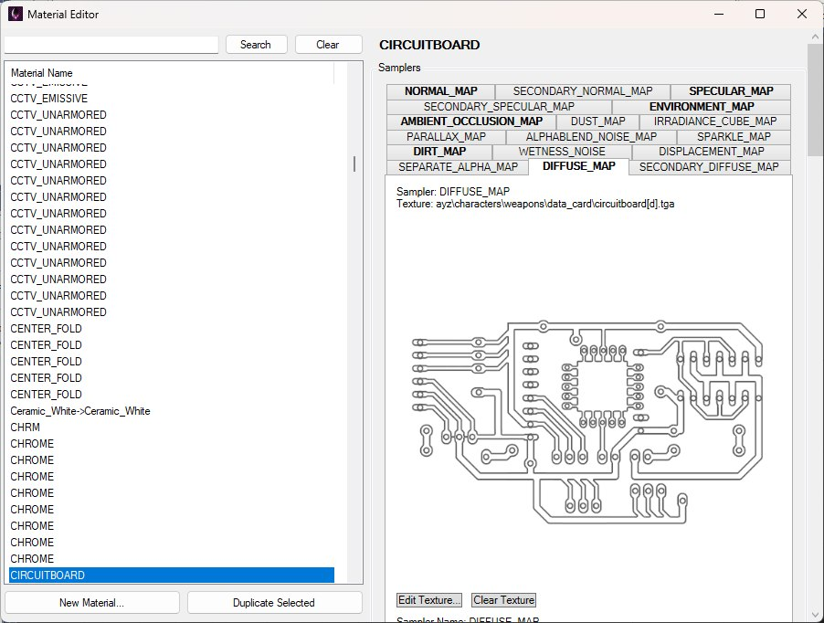
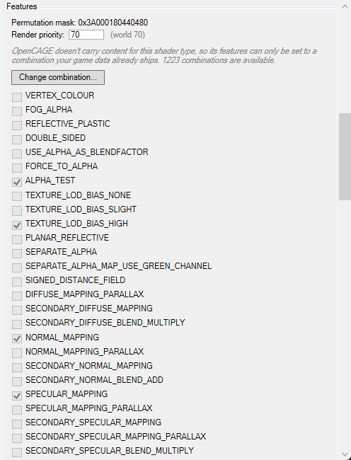
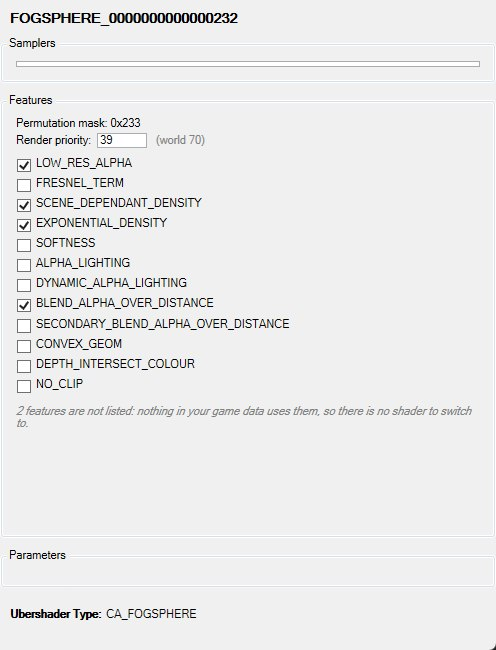
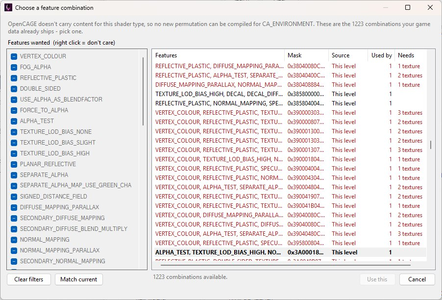
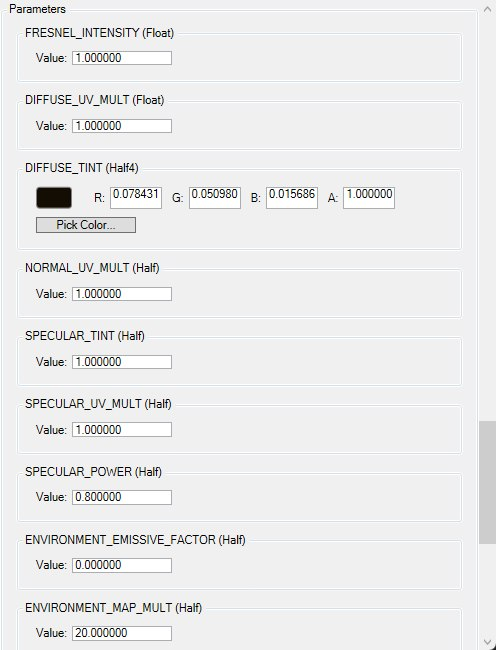
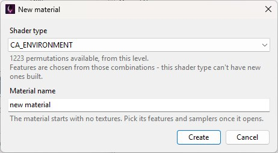

After loading a level, open View → Material Editor to launch the Material Editor. It edits the level's visual/render materials — texture samplers, ubershader features, and shader parameters stored under that level's RENDERABLE data (e.g. LEVEL_MODELS.MTL / LEVEL_MODELS.CST).
This is separate from Physical Materials (collision / Havok surface types under Configurations). The Material Editor is about how things look.
The same window can also open as a picker (with Use This Material) from places like renderable instances, the Material Mapping Editor, Model Editor import, and entity parameters that take a material — those used to be a plain text field.
You don't always have to build a material by hand: importing a model can generate materials from the textures the model carries, and they turn up here for editing like any other.
The left list shows materials for the loaded level, grouped by ubershader type. Use Search / Clear to filter, then select a material to edit it on the right, as shown below. Edits apply in memory immediately (Viewport and other views that use the material can update without waiting for a disk save).

CIRCUITBOARD selected: the level's materials on the left, and on the right the Samplers tabs for the selected one — the bold tabs are the slots with a texture assigned.
The footer shows the material's Ubershader Type (read-only).
A material can hold up to 12 texture references, and the tabs list every sampler slot its ubershader declares (17 for CA_ENVIRONMENT — DIFFUSE_MAP, NORMAL_MAP, DIRT_MAP and the rest). A bold tab has a texture assigned, and the editor opens on the first tab that does — in the screenshot above that's DIFFUSE_MAP, showing its texture.
Each tab names its sampler and texture at the top, then shows the preview, the two buttons, and beneath them the sampler index, texture reference index and — when a texture is set — the texture's name and format.
Feature checkboxes toggle ubershader feature flags — dirt maps, detail normals, parallax, alpha blending, and so on, depending on the ubershader type. The same box holds the material's Render priority: 70 is the world pass that draws geometry lit, opaque and textured (retail's hand-held weapons use it too), and lower values are special passes — 52 translucent, 39 unlit, 31 untextured over everything — so a first-person model left at a world priority draws behind the player's hands.
A feature isn't just a switch inside one shader. Every combination of features is a separate compiled shader, and toggling one binds the material to a different one. That's why the checkboxes used to do nothing useful: the permutation you were asking for generally wasn't in the level.

CIRCUITBOARD's Features box. For CA_ENVIRONMENT and most other families the checkboxes are read-only, and Change combination… picks from the 1,223 combinations the game ships for the family.
How the checkboxes behave now depends on the shader family. For most families — CA_ENVIRONMENT, which nearly all world geometry uses, included — OpenCAGE has no shader source to compile new permutations from, so the checkboxes are greyed out, as above, and simply describe the shader the material is bound to. The note above them says how many combinations your game data ships for the family, and Change combination… opens a picker listing them (see Shader Permutations below). For the handful of families OpenCAGE carries reconstructed shader source for — fog planes and fog spheres, particles, ribbons, effect overlays, simple water and simple refraction — the checkboxes are live, and hovering one tells you where the permutation it needs would come from:
Features whose permutation can't be reached by any of those three routes stay hidden, so a checkbox you can see is one you can actually use; a note under the list says how many were left out.

A CA_FOGSPHERE material: the families OpenCAGE carries shader source for get live checkboxes, and features nothing in the game data uses are hidden — two here. Fog spheres have no samplers or parameters, so those boxes are empty.
Switching a feature migrates the material's existing shader constants onto the new shader rather than resetting them.
The first time you launch OpenCAGE against a game install, it harvests a shader permutation database from your game data in the background — every (family, feature mask) combination the game actually ships, gathered from every level. You'll see progress in the status bar; nothing blocks while it runs, and if it fails you're simply left with the permutations each level already carries.
At the top of the Features box, Permutation mask: 0x… shows the material's current feature mask, and for a read-only family the note beneath it says how many combinations are currently reachable — the level's own pool plus whatever the harvest found. Where more than one is available, Change combination… opens the picker shown below rather than making you toggle features one at a time.

Change combination… after Clear filters: every permutation the game ships for CA_ENVIRONMENT, the material's current one in bold, and rows in red that would need textures the material doesn't have.
The picker opens with the filters set to the material's current features, so the list starts at one row; Clear filters shows everything and Match current puts the filters back. Click a filter to require that feature on or off, or right-click it for "don't care". Each row shows the features in that combination, its mask, whether it came from this level or from the harvested game data, how many materials in the level already use it, and — in red — how many textures it would need that this material doesn't have. Double-click a row or press Use this to rebind; the button stays greyed out while the current combination is the one selected. Pick a red row anyway and the editor warns that the material's features and textures disagree, and keeps that warning at the top of the Features box until you set the missing textures or choose a combination that matches.
For some ubershader families — fog planes and spheres, particles, ribbons, effect overlays, simple water and simple refraction — permutations can be compiled on demand rather than only found, because OpenCAGE carries reconstructed shader source for them. Those are the families whose feature checkboxes are live. Compiling needs d3dcompiler_43.dll (part of the DirectX runtime); if it's missing the editor says so and every family falls back to picking from shipped combinations. Support for this may expand over time.
Parameters expose pixel-shader constants for the material (floats, vectors, colours), each in its own box labelled with its name and type. Colour-like parameters — three- or four-component vectors whose name contains colour or tint — get a swatch, R/G/B/A boxes and Pick Color…, as the diffuse tint does below; other vectors get X/Y/Z/W boxes, and a scalar gets a single Value box whatever it's called, which is why the specular tint has no swatch. A value is committed when you leave its box.

Colour-like vector parameters get a swatch and Pick Color…; the Float and Half scalars around it get a single Value box.
Only parameters that the shader maps into the material's constant buffer are listed.
There are two ways to get a new material.

New Material… asks for the shader type and a name; everything else is set in the editor afterwards.
Only families that can actually be built on are offered — the ones this level already uses, plus any the harvested database knows, marked (not used in this level). Under the dropdown the dialog says how many permutations are available for that family and, for a read-only family, that its features will be chosen from those shipped combinations rather than ticked freely. If no family is available for the level, the editor says so rather than producing something the game can't render.
The Material Editor has no separate Save button. Persist changes with File → Save Level (Ctrl+S). That writes the level's material (and related) files back to disk.
Saving closes the game if it's running so install files aren't locked.
MATERIALS.BML), not visual MTL materials